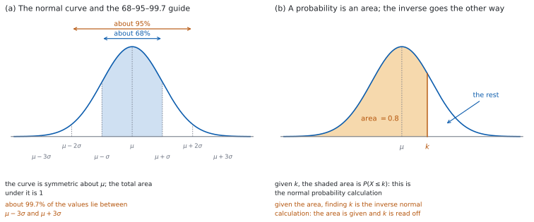
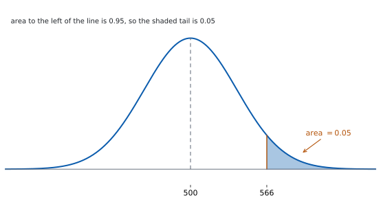

SL 4.9 — The normal distribution（正規分布）
- normal distribution（正規分布）の曲線の形と性質を述べられる。
- \(X \sim N(\mu,\ \sigma^{2})\) という書き方の \(\mu\) と \(\sigma\) を読み取れる。
- \(68\%\) / \(95\%\) / \(99.7\%\) のめやすを使って、答えの見当をつけられる。
- 確率が曲線の下の面積であることを説明できる。
- GDC の
normCdfで \(P(X < a)\)、\(P(X > a)\)、\(P(a < X < b)\) を求められる。 - inverse normal calculation（逆正規計算）を
invNormで行い、面積から値を求められる。 - 図をかいて、答えが \(\mu\) より上か下かを確かめられる。
The idea
1. 正規分布の曲線
normal distribution（正規分布）は、真ん中が高く、両側になだらかに下がっていく釣り鐘型の分布です（図 1 (a)）。
身長、測定の誤差、大量生産した製品の重さなど、多くの量がこの形に近くなります。
\(X\) が平均 \(\mu\)、標準偏差 \(\sigma\) の正規分布に従うとき
\[ X \sim N(\mu,\ \sigma^{2}) \tag{1}\]
と書きます。
かっこの中の \(2\) つ目は分散です。 \(N(90,\ 49)\) なら \(\sigma^{2} = 49\)、つまり \(\sigma = 7\) です。問題文が「標準偏差 \(7\)」と書いていることも多いので、どちらで与えられているか確かめてください。
\(X\) は連続量です。 二項分布とちがい、\(X\) はとびとびの値ではなく、区間のどの値も取りえます。
2. 曲線の性質
| 性質 | 中身 |
|---|---|
| 対称 | \(\mu\) を中心に左右対称 |
| 中心 | 平均・中央値・最頻値がすべて \(\mu\) |
| 面積 | 曲線と横軸ではさまれた面積は \(1\) |
| 広がり | \(\sigma\) が大きいほど、低く広がる |
\(P(X < \mu) = P(X > \mu) = 0.5\) です。 対称だからです。ここは検算にいつも使えます。
\(P(X = a) = 0\) です。 連続量では、ちょうど \(1\) 点の面積は \(0\) です。だから
\[ P(X < a) = P(X \le a) \]
で、「より小さい」と「以下」（同じく「より大きい」と「以上」）を区別する必要がありません。 二項分布とはここがちがいます。
3. \(68\%\) / \(95\%\) / \(99.7\%\) のめやす
正規分布では、次のことが成り立ちます（図 1 (a)）。
| 区間 | およその割合 |
|---|---|
| \(\mu - \sigma\) から \(\mu + \sigma\) | 約 \(68\%\) |
| \(\mu - 2\sigma\) から \(\mu + 2\sigma\) | 約 \(95\%\) |
| \(\mu - 3\sigma\) から \(\mu + 3\sigma\) | 約 \(99.7\%\) |
これは電卓の答えの見当をつけるためのものです。 答案では GDC の値を書きます。
片側だけなら半分にします。 \(\mu + 2\sigma\) より上は、\(\dfrac{100 - 95}{2} = 2.5\%\) ほどです。
\(\mu\) から何 \(\sigma\) 離れているかを暗算すると、桁ちがいの入力ミスが見つかります。 たとえば \(\mu\) から \(1\sigma\) ほどの値なのに確率が \(0.001\) と出たら、入力を疑います。
4. 確率は面積
\(P(a < X < b)\) は、曲線の下の \(a\) から \(b\) までの面積です（図 1 (b)）。
ちょうど \(1\) つの値をとる確率は \(0\) です。 幅のない区間には、面積がないからです。だから \(P(X < a)\) と \(P(X \le a)\) は同じ値になり、等号が付いているかどうかを気にする必要はありません。（SL 4.5 の「確率 \(0\) = 起こらない」は、結果が有限個の場面の話です。ここでは、確率 \(0\) の値も実際に出ます。）
GDC では normCdf(lower, upper, μ, σ) で求めます（GDC の節）。
入れる順を覚えてください。 下端・上端・平均・標準偏差の順です。\(\mu\) と \(\sigma\) を先に入れると、まったくちがう答えになります。
分散を入れないでください。 \(\sigma\) を入れます。\(N(90,\ 49)\) なら \(7\) です。
5. 片側と区間
片側だけのときは、反対の端をとても大きな数（または小さな数）にします。
normCdf の使い分け
| 求めたいもの | 入れ方 |
|---|---|
| \(P(X < a)\) | normCdf(-10^9, a, μ, σ)（\(-\infty\) を入れてもよい） |
| \(P(X > a)\) | normCdf(a, 10^9, μ, σ) |
| \(P(a < X < b)\) | normCdf(a, b, μ, σ) |
\(\infty\) は記号パレットから入れられます（キーボードのいちばん下、左端の π のキーを押すと開きます）。\(\pm 10^{9}\) のような大きな数でも、実用上は同じ答えになります。
余事象でも出せます。 \(P(X > a) = 1 - P(X < a)\) です。\(2\) とおりで出して比べると、検算になります。
6. inverse normal（逆正規計算）
面積が分かっていて、値を求めるのが inverse normal calculation です。
GDC では invNorm(area, μ, σ) を使います（GDC の節）。
area は「その値より左の面積」です。 \(P(X < k) = 0.9\) なら invNorm(0.9, μ, σ) です。
「上位 \(10\%\)」は、左の面積が \(0.9\) です。 右側の割合が与えられたときは、\(1\) から引いてから入れます。ここが最も多い誤りです。
For inverse normal calculations mean and standard deviation will be given.
\(\mu\) と \(\sigma\) が分からない問題は、SL 4.12 で扱います。 このページでは、必ず与えられます。
答えが \(\mu\) より上か下かを、面積から先に予想してください。 面積と \(0.5\) の大小を見ます。
7. 図をかいてから
まず釣り鐘の絵をかき、\(\mu\) に縦線を入れます。 次に、求めたい部分に色を塗ります。
塗った部分が半分より広いか狭いかを見ます。 そこから、答えが \(0.5\) より大きいか小さいかが分かります。
この \(1\) 手間で、上端と下端の入れちがいがほとんど防げます。 図と答えが合わなければ、入力を見直します。
シラバスは、正規分布の確率と値をGDC で求めるとしています。だから、その数値を出す問題は Paper 2 で出ます。
単元全体が Paper 1 の対象外というわけではありません。 曲線の対称性、\(68\)–\(95\)–\(99.7\) のめやす、\(\mu\) や \(\sigma\) を変えたときの形の変化は、電卓なしでも問われます。
答えの見当も、手でつけられます。 \(\mu\) を中心とした対称性、\(0.5\) との大小、\(68\)–\(95\)–\(99.7\) のめやす ——この \(3\) つで、入力ミスのほとんどは見つかります。

Why it works
なぜ、確率が面積になるのでしょうか。 正規分布は連続量の分布だからです。
離散の場合は、棒の高さが確率でした（SL 4.8）。連続の場合、区間の中のどの点にも同じだけの正の確率を割りあてると、点は無限にあるので、合計はいくらでも大きくなってしまいます。
そこで、確率を「区間ごとの面積」で表します。 全体の面積を \(1\) にすれば、どの区間の面積も \(0\) 以上 \(1\) 以下になり、確率として使えます。
この決め方から、\(P(X = a) = 0\) が出ます。 \(1\) 点の幅は \(0\) なので、面積も \(0\) です。だから境目を含めても含めなくても、確率は変わりません。
なぜ、対称なら \(P(X < \mu) = 0.5\) なのでしょうか。 曲線が \(\mu\) を軸に左右対称で、全体の面積が \(1\) だからです。左右の面積が等しく、足して \(1\) なので、どちらも \(\dfrac{1}{2}\) です。
なぜ、\(68\)–\(95\)–\(99.7\) が \(\mu\) と \(\sigma\) によらないのでしょうか。 どの正規分布も、同じ曲線を平行移動して拡大・縮小したものだからです。
\(\mu\) を変えると曲線は左右に動くだけ、\(\sigma\) を変えると横に伸び縮みして高さが調整されるだけで、「\(\mu\) から \(\sigma\) いくつぶん」で測った面積は変わりません。だから \(68\%\) という割合は、どの正規分布でも同じです。
この「\(\sigma\) いくつぶん」を数にしたものが \(z\) 値です。 詳しくは SL 4.12 で扱います。
なぜ、逆正規計算では面積を「左から」で数えるのでしょうか。 invNorm がもどしているのは、「\(k\) に、\(k\) より左の面積を対応させる関数」の逆だからです。\(P(X < k)\) は \(k\) が右へ動くほど増えていくので、面積 \(1\) つに対して \(k\) が \(1\) つだけ決まります。右からの面積で決めることもできますが、どちらかに約束を決めておかないと、同じ面積に \(2\) とおりの答えが出ます。
この向きは、図をかけば目で確かめられます。 面積と \(0.5\) の大小を、\(k\) と \(\mu\) の大小と見くらべてください。
Worked examples
問題文は英語です。意味が理解できなかったら、問題文の下の「日本語訳」を開いてください。解説は日本語です。
確率と値の数値は GDC で出します（Paper 2）。 対称性やめやすによる見当づけは、電卓なしでも進めます。どの問題で GDC を使うかは、演習のまえがきに書きました。答えは有効数字 \(3\) 桁（\(3\) significant figures）で書きます。
例題 1 The random variable \(X\) follows the distribution \(X \sim N(50,\ 8^{2})\).
(a) Find \(P(X < 60)\).
(b) Find \(P(X > 45)\).
(c) Find \(P(45 < X < 60)\).
(d) Explain, without using a calculator, why \(P(X > 45)\) must be greater than \(0.5\).
日本語訳
確率変数 \(X\) は \(X \sim N(50,\ 8^{2})\) に従います。
(a) \(P(X < 60)\) を求めなさい。
(b) \(P(X > 45)\) を求めなさい。
(c) \(P(45 < X < 60)\) を求めなさい。
(d) \(P(X > 45)\) が \(0.5\) より大きくなければならない理由を、電卓を使わずに説明しなさい。
\(\mu = 50\)、\(\sigma = 8\) です。
(a) normCdf(-10^9, 60, 50, 8) を使います。
\[ P(X < 60) = 0.894 \ (3 \text{ s.f.}) \]
(b) normCdf(45, 10^9, 50, 8) を使います。
\[ P(X > 45) = 0.734 \ (3 \text{ s.f.}) \]
(c) normCdf(45, 60, 50, 8) を使います。
\[ P(45 < X < 60) = 0.628 \ (3 \text{ s.f.}) \]
(d) Explain なので、英語で理由を書きます。
試験ではこう書く
Every value with \(X > 50\) also has \(X > 45\), and the values between \(45\) and \(50\) are extra. By symmetry \(P(X > 50) = 0.5\), and the extra part has positive area, so \(P(X > 45) > 0.5\).
（曲線は平均 \(50\) について対称なので \(P(X > 50) = 0.5\) である。\(X > 45\) の範囲は \(X > 50\) を全部含み、さらに \(45\) から \(50\) までの部分も含む。その面積は正なので、\(0.5\) より大きくなる、という意味です。）
検算（(a) について、対称性で）。 \(60\) は \(\mu\) より上なので、\(P(X < 60)\) は \(0.5\) より大きいはずです。\(0.894 > 0.5\) ✓
検算（(a) について、めやすで）。 \(50 + 1.25 \times 8 = 60\) なので、\(60\) は \(\mu + 1.25\sigma\) です。\(\mu + \sigma\) までで約 \(84\%\)、\(\mu + 2\sigma\) までで約 \(97.5\%\) なので、\(0.84\) と \(0.975\) の間のはずです ✓ \(0.894\) はこの中にあります。
検算（(c) について、足し算で）。 \(P(45 < X < 60) = P(X < 60) - P(X < 45)\) です。\(P(X < 45) = 1 - 0.7340 = 0.2660\) なので、\(0.8944 - 0.2660 = 0.6284\) ✓ \(3\) 桁に丸めると \(0.628\) で、直接出した答えと一致します。
検算（(b) について、余事象で）。 normCdf(-10^9, 45, 50, 8) は \(0.2660\) で、\(1 - 0.2660 = 0.734\) ✓
(a) normCdf\((-10^{9}, 60, 50, 8)\) \[P(X < 60) = 0.894\]
(b) normCdf\((45, 10^{9}, 50, 8)\) \[P(X > 45) = 0.734\]
(c) normCdf\((45, 60, 50, 8)\) \[P(45 < X < 60) = 0.628\]
(d) by symmetry \(P(X > 50) = 0.5\), and \(X > 45\) also contains the part from \(45\) to \(50\), so the probability is larger than \(0.5\)
例題 2 The heights of a large group of adults are normally distributed with mean \(170\) cm and standard deviation \(6\) cm.
(a) Find the probability that a randomly chosen adult is taller than \(180\) cm.
(b) Find the probability that a randomly chosen adult has height between \(164\) cm and \(176\) cm.
(c) Interpret your answer to part (b) using the \(68\)–\(95\)–\(99.7\) guide.
日本語訳
ある大きな集団の大人の身長は、平均 \(170\) cm、標準偏差 \(6\) cm の正規分布に従います。
(a) 無作為に選んだ大人の身長が \(180\) cm より高い確率を求めなさい。
(b) 無作為に選んだ大人の身長が \(164\) cm から \(176\) cm の間である確率を求めなさい。
(c) (b) の答えを、\(68\)–\(95\)–\(99.7\) のめやすを使って解釈しなさい。
\(\mu = 170\)、\(\sigma = 6\) です。
(a) normCdf(180, 10^9, 170, 6) を使います。
\[ P(X > 180) = 0.0478 \ (3 \text{ s.f.}) \]
(b) normCdf(164, 176, 170, 6) を使います。
\[ P(164 < X < 176) = 0.683 \ (3 \text{ s.f.}) \]
(c) Interpret なので、英語で書きます。
試験ではこう書く
The values \(164\) and \(176\) are exactly \(170 - 6\) and \(170 + 6\), that is one standard deviation either side of the mean. The guide says about \(68\%\) of a normal distribution lies in that interval, and the calculator gives \(0.683\), which agrees. So roughly two adults in every three have a height in this range.
（\(164\) と \(176\) はちょうど平均から標準偏差 \(1\) つぶん左右である。めやすではこの区間に約 \(68\%\) が入るとされ、電卓の \(0.683\) と一致する。だいたい \(3\) 人に \(2\) 人がこの範囲に入る、という意味です。）
検算（(a) について、めやすで）。 \(170 + 1.67 \times 6 \approx 180\) なので、\(180\) は \(\mu + 1.67\sigma\) のあたりです。\(\mu + 2\sigma\) より上が約 \(2.5\%\)、\(\mu + \sigma\) より上が約 \(16\%\) なので、答えはその間のはずです ✓ \(0.0478\) は \(2.5\%\) と \(16\%\) の間にあります。
検算（(b) について、めやすで）。 \(164\) と \(176\) は \(\mu \pm \sigma\) です。約 \(68\%\) になるはずで、\(0.683\) です ✓
検算（(a) について、余事象で）。 normCdf(-10^9, 180, 170, 6) は \(0.9522\) で、\(1 - 0.9522 = 0.0478\) ✓
\(X \sim N(170,\ 6^{2})\)
(a) normCdf\((180, 10^{9}, 170, 6)\) \[P(X > 180) = 0.0478\]
(b) normCdf\((164, 176, 170, 6)\) \[P(164 < X < 176) = 0.683\]
(c) \(164\) and \(176\) are \(\mu \pm \sigma\), and the guide gives about \(68\%\), which matches \(0.683\)
例題 3 The lifetime, in hours, of a type of lamp is normally distributed with mean \(500\) and standard deviation \(40\).
(a) Find the value of \(k\) such that \(P(X < k) = 0.9\).
(b) Sketch the normal curve, shade the region whose area is \(0.05\), and hence find the lifetime that is exceeded by only the longest-lasting \(5\%\) of the lamps.
(c) Find the probability that a randomly chosen lamp lasts between \(460\) and \(560\) hours.
(d) Explain why the answer to part (a) must be greater than \(500\).
日本語訳
ある種類のランプの寿命（時間）は、平均 \(500\)、標準偏差 \(40\) の正規分布に従います。
(a) \(P(X < k) = 0.9\) となる \(k\) の値を求めなさい。
(b) 正規分布の曲線をかき、面積が \(0.05\) になる部分に色を塗りなさい。そのうえで、寿命の長いほうから \(5\%\) のランプだけがこえる寿命を求めなさい。
(c) 無作為に選んだランプの寿命が \(460\) 時間から \(560\) 時間の間である確率を求めなさい。
(d) (a) の答えが \(500\) より大きくなければならない理由を説明しなさい。
\(\mu = 500\)、\(\sigma = 40\) です。
(a) invNorm(0.9, 500, 40) を使います（第 6 節）。
\[ k = 551 \ (3 \text{ s.f.}) \]
(b) 図：\(\mu = 500\) に縦線を入れ、右のすその細い部分を塗ります。塗った部分の面積が \(0.05\) なので、その左は \(1 - 0.05 = 0.95\) です。invNorm(0.95, 500, 40) を使います。

\[ 566 \ \text{hours} \ (3 \text{ s.f.}) \]
(c) \(460\) は \(\mu - \sigma\)、\(560\) は \(\mu + 1.5\sigma\) です。normCdf(460, 560, 500, 40) を使います。
\[ P(460 < X < 560) = 0.775 \ (3 \text{ s.f.}) \]
(d) Explain why なので、英語で理由を書きます。
試験ではこう書く
The curve is symmetric about \(500\), so exactly half the area lies to the left of \(500\), giving \(P(X < 500) = 0.5\). The required area to the left of \(k\) is \(0.9\), which is larger than \(0.5\), so \(k\) must lie to the right of \(500\).
（曲線は \(500\) について対称なので、\(500\) の左の面積はちょうど半分で \(P(X < 500) = 0.5\) である。\(k\) の左に必要な面積 \(0.9\) はそれより大きいので、\(k\) は \(500\) より右にある、という意味です。）
検算（(a) について、もどします）。 normCdf(-10^9, 551.26, 500, 40) は \(0.900\) です ✓ 与えられた面積と一致します。
検算（(a) について、めやすで）。 \(\mu + \sigma = 540\) までで約 \(84\%\)、\(\mu + 2\sigma = 580\) までで約 \(97.5\%\) です。\(90\%\) はその間なので、\(k\) は \(540\) と \(580\) の間のはずです ✓ \(551\) はこの中にあります。
検算（(b) について、(a) との大小で）。 上位 \(5\%\) の境目は、上位 \(10\%\) の境目より右にあるはずです。\(566 > 551\) ✓
検算（(c) について、めやすで）。 左は \(1\sigma\)、右は \(1.5\sigma\) です。\(\mu \pm \sigma\)（約 \(68\%\)）より広く、\(\mu \pm 2\sigma\)（約 \(95\%\)）より狭いはずです ✓ \(0.775\) はこの間にあります。
\(X \sim N(500,\ 40^{2})\)
(a) invNorm\((0.9, 500, 40)\) \[k = 551\]
(b) sketch: curve with the right-hand tail of area \(0.05\) shaded; area to the left \(= 0.95\); invNorm\((0.95, 500, 40)\) \[566 \text{ hours}\]
(c) normCdf\((460, 560, 500, 40)\) \[P(460 < X < 560) = 0.775\]
(d) by symmetry \(P(X < 500) = 0.5\), and \(0.9 > 0.5\), so \(k\) is to the right of \(500\)
例題 4 The masses, in grams, of apples from an orchard are normally distributed with mean \(72\) and standard deviation \(5\). Apples with mass greater than \(80\) g are sold as large.
(a) Find the proportion of apples sold as large.
(b) Find the probability that a randomly chosen apple has mass less than \(65\) g.
(c) Find the proportion of apples with mass between \(62\) g and \(82\) g.
(d) Comment on whether the normal model can be exactly correct for the mass of an apple.
日本語訳
ある果樹園のりんごの質量（グラム）は、平均 \(72\)、標準偏差 \(5\) の正規分布に従います。質量が \(80\) g より大きいりんごは「大玉」として売られます。
(a) 「大玉」として売られるりんごの割合を求めなさい。
(b) 無作為に選んだりんごの質量が \(65\) g 未満である確率を求めなさい。
(c) 質量が \(62\) g から \(82\) g の間であるりんごの割合を求めなさい。
(d) りんごの質量について、正規分布のモデルが厳密に正しいといえるかどうかについて述べなさい。
\(\mu = 72\)、\(\sigma = 5\) です。
(a) normCdf(80, 10^9, 72, 5) を使います。
\[ P(X > 80) = 0.0548 \ (3 \text{ s.f.}) \]
(b) normCdf(-10^9, 65, 72, 5) を使います。
\[ P(X < 65) = 0.0808 \ (3 \text{ s.f.}) \]
(c) \(62\) と \(82\) は \(\mu \pm 2\sigma\) です。normCdf(62, 82, 72, 5) を使います。
\[ P(62 < X < 82) = 0.954 \ (3 \text{ s.f.}) \]
(d) Comment on なので、英語で書きます。
試験ではこう書く
It cannot be exactly correct. A normal distribution gives positive probability to every interval, including intervals of negative values, but an apple cannot have a negative mass. Here zero lies \(14.4\) standard deviations below the mean, so \(P(X < 0)\) is far too small to matter and the model is a good approximation over the range of masses that actually occur.
（厳密には正しくない。正規分布はどんな区間にも正の確率を与えるので、負の値の区間にも確率がついてしまうが、りんごの質量が負になることはない。ここでは \(0\) が平均より \(14.4\) 標準偏差下にあるので、\(P(X < 0)\) は無視できるほど小さく、実際に現れる質量の範囲ではよい近似である、という意味です。）
検算（(a) について、めやすで）。 \(72 + 1.6 \times 5 = 80\) なので、\(80\) は \(\mu + 1.6\sigma\) です。\(\mu + \sigma\) より上が約 \(16\%\)、\(\mu + 2\sigma\) より上が約 \(2.5\%\) なので、答えはその間のはずです ✓ \(0.0548\) はこの間にあります。
検算（(c) について、めやすで）。 \(\mu \pm 2\sigma\) なので約 \(95\%\) です ✓ \(0.954\) と合っています。
検算（(b) について、対称性で）。 \(65\) は \(\mu\) より下なので、\(P(X < 65)\) は \(0.5\) より小さいはずです。\(0.0808 < 0.5\) ✓
検算（(b) について、何 \(\sigma\) か）。 \(72 - 1.4 \times 5 = 65\) なので、\(65\) は \(\mu - 1.4\sigma\) です。\(\mu - \sigma\) より下が約 \(16\%\)、\(\mu - 2\sigma\) より下が約 \(2.5\%\) なので、その間のはずです ✓ \(0.0808\) はこの中にあります。\(\sigma\) に分散の \(25\) を入れていると、ここで合いません。
なお、\(0\) までの距離。 \(72 = 14.4 \times 5\) なので、\(0\) は平均より \(14.4\) 標準偏差下にあります。だから負になる確率はきわめて小さく、実用上は無視できます。
\(X \sim N(72,\ 5^{2})\)
(a) normCdf\((80, 10^{9}, 72, 5)\) \[P(X > 80) = 0.0548\]
(b) normCdf\((-10^{9}, 65, 72, 5)\) \[P(X < 65) = 0.0808\]
(c) normCdf\((62, 82, 72, 5)\) \[P(62 < X < 82) = 0.954\]
(d) the normal model gives positive probability to intervals of negative masses, which is impossible; but \(0\) is \(14.4\) standard deviations below the mean, so the model is a good approximation
Common errors
GDC に入れるのは標準偏差です（第 4 節）。\(N(\mu,\ \sigma^{2})\) の書き方にまどわされないでください。
normCdf の引数の順を入れかえる
下端・上端・平均・標準偏差の順です（表 3）。順がちがうと、まったくちがう答えになります。
invNorm に右側の面積を入れる
invNorm は左の面積を取ります（第 6 節）。「上位 \(10\%\)」なら \(0.9\) を入れます。
\(P(X > a)\) でも、上端に大きな数（または \(\infty\)）が必要です（表 3）。
図があれば、答えが \(0.5\) より大きいか小さいかがすぐ分かります（第 7 節）。
Find the probability と言われたら、答えは GDC の値（\(0.683\) のような \(3\) 桁）です。\(68\%\) は見当をつけるためのもので、Interpret のようにめやすを使えと言われたときだけ答案に書きます（第 3 節）。
Using your GDC (TI-Nspire CX II)
以下は TI-Nspire CX II の操作です。ほかの機種では名前がちがいます。
手順は答案に書きません。 書くのは、使った関数と入れた数（normCdf(45, 60, 50, 8) など）と、出た答えです。
1. 確率を求める：normCdf
menu → Statistics → Distributions から normCdf を出します。
入れるのは \(4\) つです。 normCdf(lower, upper, μ, σ) の順に、下端・上端・平均・標準偏差を入れます。
片側のときは、反対の端に \(\infty\) か大きな数を入れます。 \(\infty\) は記号パレット（キーボードのいちばん下、左端の π のキーを押すと開きます）から入れられます。\(\pm 10^{9}\) でも同じ答えになります。
入れるのは \(\sigma\) です。 分散を入れると、答えが変わります。
2. 値を求める：invNorm
同じ menu → Statistics → Distributions から invNorm を出します。
入れるのは \(3\) つです。 invNorm(area, μ, σ) の順に、左の面積・平均・標準偏差を入れます。
invNorm に入れる面積
| 問題文 | 入れる面積 |
|---|---|
| \(P(X < k) = 0.9\) | \(0.9\) |
| \(P(X > k) = 0.9\) | \(0.1\) |
| 上位 \(5\%\) の境目 | \(0.95\) |
| 下位 \(5\%\) の境目 | \(0.05\) |
3. 入力を確かめる
答えを normCdf にもどします。 invNorm で出した \(k\) を normCdf(-10^9, k, μ, σ) に入れて、もとの面積になるか見ます。
\(\mu\) との上下を見ます。 面積が \(0.5\) より大きければ \(k > \mu\)、小さければ \(k < \mu\) です。ここが逆なら、面積を取りちがえています。
\(\mu\) から何 \(\sigma\) 離れているかを暗算します。 \(\mu \pm 3\sigma\) の外なら確率は \(0.003\) ほど、\(\mu \pm \sigma\) の中なら \(0.68\) ほどです。桁がちがえば、\(\sigma\) の入力を疑います。
確率が \(0\) 以上 \(1\) 以下かを見ます。 ここを外したら、引数の順がちがいます。ただし、\(\mu\) と \(\sigma\) だけを入れかえたときは \(0\) と \(1\) の間に収まることがあります。そのときは、\(\mu\) から何 \(\sigma\) かの見当で見つけます。
Exercises
各問題に、折りたたみが \(3\) つ付いています。日本語訳、解答例（答案用紙に書くべきこと。英語です。英語の答案例が付くものもあります）、解説（なぜそうなるか。日本語です）。
まず自分で解いて、次に解答例と見くらべてください。解説は、合わなかったときだけ開けば十分です。
GDC を使うのは \(1\) から \(8\) です。 \(9\)・\(10\) は、与えられた値をもとに考える問題なので、電卓なしで解けます。
1 The random variable \(X\) follows the distribution \(X \sim N(20,\ 3^{2})\). Find \(P(X < 24)\) and \(P(X > 17)\).
日本語訳
確率変数 \(X\) は \(X \sim N(20,\ 3^{2})\) に従います。\(P(X < 24)\) と \(P(X > 17)\) を求めなさい。
normCdf\((-10^{9}, 24, 20, 3)\) \[P(X < 24) = 0.909\]
normCdf\((17, 10^{9}, 20, 3)\) \[P(X > 17) = 0.841\]
\(\mu = 20\)、\(\sigma = 3\) です。どちらも片側なので、反対の端に大きな数を入れます（表 3）。
検算（対称性で）。 \(24\) も \(17\) も、確率を大きくする側です。\(24 > \mu\) なので \(P(X < 24) > 0.5\)、\(17 < \mu\) なので \(P(X > 17) > 0.5\) ✓ どちらも \(0.5\) より大きくなっています。
検算（\(17\) はちょうど \(\mu - \sigma\)）。 \(\mu - \sigma\) より上は約 \(84\%\) です ✓ \(0.841\) と合っています。
検算（\(24\) の位置）。 \(20 + 1.33 \times 3 \approx 24\) なので、\(24\) は \(\mu + 1.33\sigma\) のあたりです。\(\mu + \sigma\) までで約 \(84\%\)、\(\mu + 2\sigma\) までで約 \(97.5\%\) なので、その間のはずです ✓
2 The random variable \(X\) follows the distribution \(X \sim N(100,\ 225)\). Write down the value of \(\sigma\), and find \(P(X > 130)\).
日本語訳
確率変数 \(X\) は \(X \sim N(100,\ 225)\) に従います。\(\sigma\) の値を書き、\(P(X > 130)\) を求めなさい。
\[\sigma = \sqrt{225} = 15\]
normCdf\((130, 10^{9}, 100, 15)\) \[P(X > 130) = 0.0228\]
\(225\) は分散です。 GDC に入れるのは \(\sqrt{225} = 15\) です（第 4 節）。\(\mu = 100\)、\(\sigma = 15\) で、\(130 = \mu + 2\sigma\) です。
検算（めやすで）。 \(\mu \pm 2\sigma\) の中に約 \(95\%\) が入るので、上側の外は約 \(\dfrac{100 - 95}{2} = 2.5\%\) です ✓ \(0.0228\) はこれに近い値です。
検算（対称性で）。 \(P(X < 70)\) も同じ値になるはずです。normCdf(-10^9, 70, 100, 15) は \(0.0228\) ✓
検算（余事象で）。 normCdf(-10^9, 130, 100, 15) は \(0.9772\) で、\(1 - 0.9772 = 0.0228\) ✓
3 The random variable \(X\) follows the distribution \(X \sim N(250,\ 12^{2})\). Find the lower quartile and the upper quartile of \(X\).
日本語訳
確率変数 \(X\) は \(X \sim N(250,\ 12^{2})\) に従います。\(X\) の第 \(1\) 四分位数と第 \(3\) 四分位数を求めなさい。
invNorm\((0.25, 250, 12)\) \[Q_{1} = 242 \ (3 \text{ s.f.})\]
invNorm\((0.75, 250, 12)\) \[Q_{3} = 258 \ (3 \text{ s.f.})\]
第 \(1\) 四分位数は左の面積が \(0.25\)、第 \(3\) 四分位数は左の面積が \(0.75\) の値です（第 6 節）。
検算（対称性で）。 \(\mu\) からの距離が等しくなるはずです。\(250 - 241.9 = 8.1\)、\(258.1 - 250 = 8.1\) ✓
検算（上下）。 \(0.25 < 0.5\) なので \(Q_{1} < \mu\)、\(0.75 > 0.5\) なので \(Q_{3} > \mu\) ✓
検算（もどします）。 normCdf(241.9, 258.1, 250, 12) は \(0.500\) です ✓ 四分位数の間には半分が入ります。
4 A machine fills bottles. The volume, in litres, is normally distributed with mean \(4.2\) and standard deviation \(0.6\). Find the probability that a randomly chosen bottle contains more than \(5\) litres.
日本語訳
ある機械がボトルに液体を詰めます。容量（リットル）は、平均 \(4.2\)、標準偏差 \(0.6\) の正規分布に従います。無作為に選んだボトルの容量が \(5\) リットルより多い確率を求めなさい。
\(X \sim N(4.2,\ 0.6^{2})\)
normCdf\((5, 10^{9}, 4.2, 0.6)\) \[P(X > 5) = 0.0912\]
\(\mu = 4.2\)、\(\sigma = 0.6\) です。\(5\) は \(\mu\) より上なので、答えは \(0.5\) より小さくなります。
検算（何 \(\sigma\) か）。 \(4.2 + 1.33 \times 0.6 \approx 5\) なので、\(5\) は \(\mu + 1.33\sigma\) のあたりです。\(\mu + \sigma\) より上が約 \(16\%\)、\(\mu + 2\sigma\) より上が約 \(2.5\%\) なので、その間のはずです ✓ \(0.0912\) はこの間にあります。
検算（余事象で）。 normCdf(-10^9, 5, 4.2, 0.6) は \(0.9088\) で、\(1 - 0.9088 = 0.0912\) ✓
\(\sigma\) に \(0.36\)（分散）を入れないでください。 \(0.6\) が標準偏差です。
5 The random variable \(X\) follows the distribution \(X \sim N(65,\ 8^{2})\). Find the value of \(k\) such that \(P(X < k) = 0.1\). Explain why \(k\) must be less than \(65\).
日本語訳
確率変数 \(X\) は \(X \sim N(65,\ 8^{2})\) に従います。\(P(X < k) = 0.1\) となる \(k\) の値を求めなさい。また、\(k\) が \(65\) より小さくなければならない理由を説明しなさい。
invNorm\((0.1, 65, 8)\) \[k = 54.7 \ (3 \text{ s.f.})\]
\(P(X < 65) = 0.5\) by symmetry, and \(0.1 < 0.5\), so \(k\) is to the left of \(65\)
左の面積が \(0.1\) なので、invNorm(0.1, 65, 8) です（第 6 節）。
検算（もどします）。 normCdf(-10^9, 54.75, 65, 8) は \(0.100\) です ✓
検算（めやすで）。 \(\mu - \sigma = 57\) までで約 \(16\%\)、\(\mu - 2\sigma = 49\) までで約 \(2.5\%\) です。\(10\%\) はその間なので、\(k\) は \(49\) と \(57\) の間のはずです ✓ \(54.7\) はこの中にあります。
試験ではこう書く
The curve is symmetric about the mean, so \(P(X < 65) = 0.5\). The area required to the left of \(k\) is \(0.1\), which is smaller than \(0.5\), so \(k\) must lie to the left of \(65\).
6 The random variable \(X\) follows the distribution \(X \sim N(500,\ 25^{2})\). Find \(P(480 < X < 530)\).
日本語訳
確率変数 \(X\) は \(X \sim N(500,\ 25^{2})\) に従います。\(P(480 < X < 530)\) を求めなさい。
normCdf\((480, 530, 500, 25)\) \[P(480 < X < 530) = 0.673\]
\(\mu = 500\)、\(\sigma = 25\) です。区間は \(\mu\) をはさんでいますが、左右で長さがちがいます（左が \(20\)、右が \(30\)）。
検算（\(2\) つに分けます）。 \(P(480 < X < 500) = 0.2881\)、\(P(500 < X < 530) = 0.3849\) で、足すと \(0.673\) ✓
検算（左右の大小）。 右の \(30\) のほうが長いので、右側の面積が大きいはずです。\(0.3849 > 0.2881\) ✓
検算（めやすで）。 \(\mu \pm \sigma\)（\(475\) から \(525\)）と幅は同じ \(50\) ですが、\(\mu\) から右に \(5\) ずれています。\(\mu\) を中心にした区間がいちばん面積が大きいので、\(0.683\) より少し小さいはずです ✓ \(0.673\) です。
7 The random variable \(X\) follows the distribution \(X \sim N(30,\ 4^{2})\). Find the value of \(k\) such that \(P(X > k) = 0.05\).
日本語訳
確率変数 \(X\) は \(X \sim N(30,\ 4^{2})\) に従います。\(P(X > k) = 0.05\) となる \(k\) の値を求めなさい。
area to the left \(= 1 - 0.05 = 0.95\); invNorm\((0.95, 30, 4)\) \[k = 36.6 \ (3 \text{ s.f.})\]
右の面積が \(0.05\) なので、左の面積は \(1 - 0.05 = 0.95\) です。invNorm(0.95, 30, 4) です（第 6 節）。
検算（もどします）。 normCdf(-10^9, 36.58, 30, 4) は \(0.950\) です ✓
検算（めやすで）。 \(\mu + 2\sigma = 38\) までで約 \(97.5\%\)、\(\mu + \sigma = 34\) までで約 \(84\%\) です。\(95\%\) はその間なので、\(k\) は \(34\) と \(38\) の間のはずです ✓ \(36.6\) はこの中にあります。
\(0.05\) を入れないでください。 それだと下位 \(5\%\) の境目 \(23.4\) が出てしまいます（第 6 節）。
8 The time, in minutes, taken by students to finish a task is normally distributed with mean \(12\) and standard deviation \(2.5\). Find the probability that a randomly chosen student takes less than \(10\) minutes. Interpret this value for a class of \(200\) students.
日本語訳
生徒がある作業を終えるのにかかる時間（分）は、平均 \(12\)、標準偏差 \(2.5\) の正規分布に従います。無作為に選んだ生徒が \(10\) 分未満で終える確率を求めなさい。\(200\) 人の集団にとってこの値が何を意味するかを解釈しなさい。
\(X \sim N(12,\ 2.5^{2})\)
normCdf\((-10^{9}, 10, 12, 2.5)\) \[P(X < 10) = 0.212\]
\[200 \times 0.212 = 42.4\]
about \(42\) of the \(200\) students are expected to finish in under \(10\) minutes
\(\mu = 12\)、\(\sigma = 2.5\) です。\(10 < \mu\) なので、答えは \(0.5\) より小さくなります。期待される人数は \(200 \times P\) です（SL 4.5）。
検算（何 \(\sigma\) か）。 \(12 - 0.8 \times 2.5 = 10\) なので、\(10\) は \(\mu - 0.8\sigma\) です。\(\mu - \sigma\) より下が約 \(16\%\) なので、それより少し大きいはずです ✓ \(0.212 > 0.16\) です。
検算（対称性で）。 \(P(X > 14)\) も同じ値になるはずです。normCdf(14, 10^9, 12, 2.5) は \(0.212\) ✓
検算（人数の見当）。 \(200\) 人の \(2\) 割ほどなので \(40\) 人前後です ✓ \(42.4\) はこの見当と合っています。
試験ではこう書く
About \(21.2\%\) of students finish in under \(10\) minutes, so in a class of \(200\) the expected number is \(200 \times 0.212 = 42.4\), that is roughly \(42\) students. This is a long-run average: the actual number in any one class of \(200\) will vary around \(42\).
9 The random variable \(X\) follows the distribution \(X \sim N(40,\ 12^{2})\). A student finds \(P(X < 50) = 0.798\) and then writes \(P(X \le 50) = 0.798 + P(X = 50)\), adding \(0.0001\) for the endpoint. Identify the error in the student’s reasoning.
日本語訳
確率変数 \(X\) は \(X \sim N(40,\ 12^{2})\) に従います。ある生徒が \(P(X < 50) = 0.798\) を求めたあと、\(P(X \le 50) = 0.798 + P(X = 50)\) と書き、端の分として \(0.0001\) を足しました。この生徒の考え方の誤りを指摘しなさい。
\(X\) is continuous, so \(P(X = 50) = 0\), not \(0.0001\); the equation itself is right, but the extra term is zero and \(P(X \le 50) = 0.798\)
Identify the error なので、どこがまちがいかを名指しします（第 2 節）。\(P(X \le 50) = P(X < 50) + P(X = 50)\) という式は正しいのですが、\(X\) は連続量なので \(P(X = 50) = 0\) です。足すべきは \(0.0001\) ではなく \(0\) です。
検算（電卓で）。 normCdf(50, 50, 40, 12) は \(0\) になります ✓ 下端と上端が同じなら面積は \(0\) です。
検算（離散ならどうか）。 \(X \sim B(20,\ 0.5)\) なら \(P(X = 10) = 0.176\) で \(0\) ではありません ✓ 連続か離散かで変わります。
検算（もとの値）。 normCdf(-10^9, 50, 40, 12) は \(0.7977\) で、\(3\) 桁で \(0.798\) です ✓ \(0.0001\) を足しても \(3\) 桁の答えは変わらないので、「値が変わらないから正しい」とは言えません。誤りは考え方のほうです。
試験ではこう書く
The equation \(P(X \le 50) = P(X < 50) + P(X = 50)\) is correct, but the value used for the last term is wrong. A normally distributed variable is continuous, so probabilities are areas under the curve and a single value has zero width. Hence \(P(X = 50) = 0\), not \(0.0001\), and \(P(X \le 50) = P(X < 50) = 0.798\).
10 The masses of a type of bird are modelled by a normal distribution with mean \(30\) g and standard deviation \(4\) g. A student says that a bird of mass \(50\) g is impossible under this model. Comment on this statement.
日本語訳
ある鳥の質量は、平均 \(30\) g、標準偏差 \(4\) g の正規分布でモデル化されています。ある生徒が、このモデルのもとでは質量 \(50\) g の鳥はありえないと言いました。この主張について述べなさい。
\(50\) g is \(5\) standard deviations above the mean, so \(P(X > 50) \approx 2.87 \times 10^{-7}\): very unlikely, but not impossible under the model
Comment on なので、どこまで言えるかを書きます。正規分布はどんな区間にも正の確率を与えるので、「\(P(X > 50) = 0\)」とは言えません。
検算（何 \(\sigma\) か）。 \(30 + 5 \times 4 = 50\) なので、\(50\) は \(\mu + 5\sigma\) です ✓ \(\mu \pm 3\sigma\) の外が約 \(0.3\%\) なので、\(5\sigma\) の外はそれよりはるかに小さくなります。
検算（電卓で）。 normCdf(50, 10^9, 30, 4) は \(2.87 \times 10^{-7}\) です ✓ \(0\) ではありません。
なお、モデルと現実。 実際の鳥の質量には上限も下限もあります。モデルが完全でないことと、モデルの中で確率が \(0\) でないことは、別の話です。
試験ではこう書く
Under this model \(50\) g is five standard deviations above the mean, and \(P(X > 50) \approx 2.87 \times 10^{-7}\). That is extremely small but not zero, so the model does not make such a bird impossible, only very unlikely. Saying it is impossible would be a statement about real birds, not about the normal model.